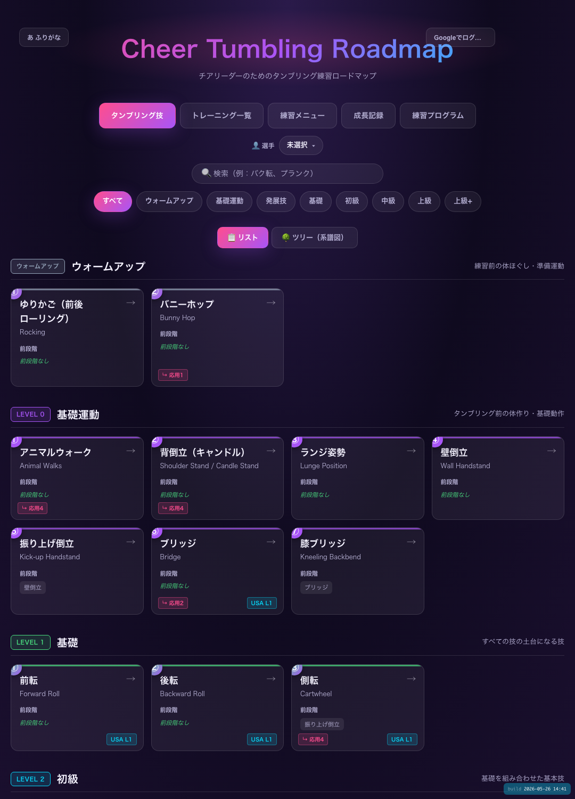

正しいタンブリングを、安全に、段階的に。
指導者・選手のためのタンブリング練習ロードマップアプリ
指導歴 18 年の元体操選手が監修した、チア・体操指導者と選手のための学習アプリ。
ウォームアップから後方宙返りまでの主要技を、習得順に並べたロードマップで体系化。
動画解説・前段階の必須スキル・つまずきポイント・推奨トレーニングをすべて一画面で確認できます。
33
技
44
トレ
60+
動画
30
日 無料

↑ 実際のアプリ画面（レベル順カード表示）
📚
技ロードマップ閲覧
33技+44トレを動画付き／レベル順／系譜図で閲覧。ポイント・ミス・進め方も明記。
📋
練習メニュー作成
技とトレを組合せて自分用に保存。回数・秒数も指定可能。リンクで共有も。
📈
選手ごとの進捗記録
選手ごとに「習得中／合格」を技ごとに記録。指導者は俯瞰、選手は到達度を把握。
⚙️
練習プログラム自動生成
人数・時間・目標技を入力すれば、WU→補強→技練習までを自動提案。
こんな現場で使えます
📣 チア指導者
💃 チアダンス
🤸 体操教室
🔁 バク転教室
🎯 アクロバット
👨👩👧 選手の保護者
🏅 競技選手
📚 部活顧問
▶ 今すぐ 30 日無料で始められます
クレジットカード不要・1分で開始

スマホでQRを読み取り、または下記URLへ
roadmap.cheer-tumbling.jp/
① Safari/Chrome で開く
② 共有 → ホーム画面に追加
③ Google または メール で登録 → すぐ使える
② 共有 → ホーム画面に追加
③ Google または メール で登録 → すぐ使える